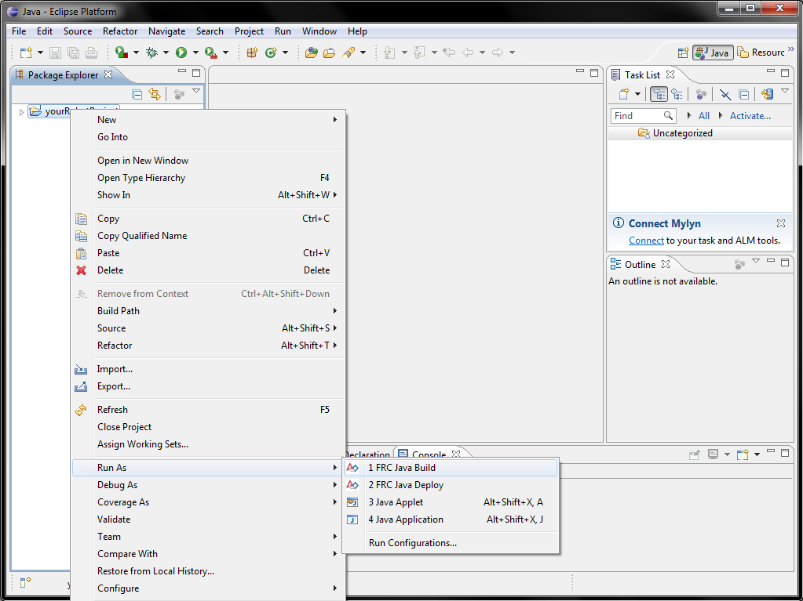
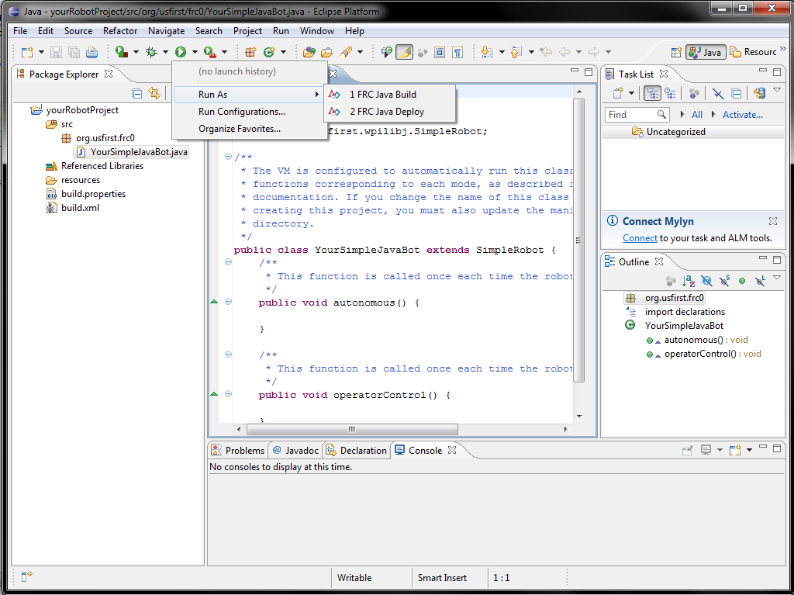

An FRC Java project may be launched using launch shortcuts in the Eclipse environment either through the context menu "Run As..." menu or the tool bar "Run As..." menu. In order to launch the project correctly, it must either be selected in the project view, or one of its files must be open and active in the Eclipse editor. To build an FRC project without deploying it to the cRIO, select "FRC Java Build". To build your project and deploy it to the cRIO, select "FRC Java Deploy". Projects can also be run in debug mode.
Use of the context menu to launch FRC projects
Use of the toolbar menu to launch FRC projects